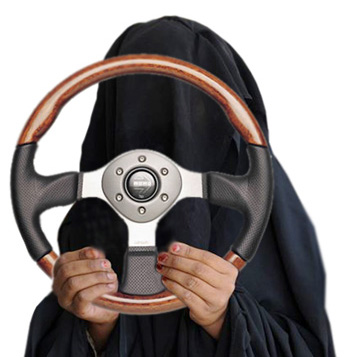

Стараюсь быть нарочито толерантным. Это и для психики полезней, и вообще кажется здравым и конструктивным. Но…
Как и в каждом шкафу, в моём шкафу толерантности не без скелетиков. Впрочем, большим своим плюсом я считаю именно хорошее знание содержимого вот этих вот своих шкафов. И твоих тоже, да )
В Саудовской Аравии женщинам любой национальности до 2006 года было запрещено водить автомобиль. Данная норма была принята в 1932 г. Сегодня до исполнения 30 лет женщина может водить автомобиль только в присутствии мужа, отца или брата
Один из этих скелетиков — я не приемлю водителей женщин. Вряд ли этому есть какое-то логичное объяснение, ведь женщина тоже человек (хотя на английском пишется иначе). Но женщина за рулём выглядит в моих глазах примерно как мужчина в женских чулках с поясом. Если такая картина кажется тебе нормальной, то женщина за рулём для меня так же нелепа, как вяжущий носки внукам мужчина. Ну, как бы бывает, но как-то нелепо.
В моём окружении, конечно, есть женщины, которые водят автомобиль. Таких, признаться, большинство. Некоторые (немного) делают это даже расслабленно. Некоторые даже не придвигают сиденье вплотную к рулю и не ложатся на него всей грудью. Единицы даже умеют ездить задом, а одна даже ориентируется в городе. Но женщина за рулём всегда будет для меня в той же степени трансвеститом, что мужчина, который курит тонкие ароматизированные сигареты (зацепил ещё одну социальную группу? Да, лаааадно…)
Женщину не красит умение разбираться в смене масла и шин, знание хороших автомоек и мест, где можно дёшево поменять колодки. Женщину украшает пассажирское сиденье и спутник рядом. Всё остальное глупость и происки феминисток с проклятого запада.
Кстати, заметил, что по выходным количество женщин за рулём на дорогах города значительно увеличивается. Чуть ли не каждый второй водитель в субботу — женщина. Сегодня ехала одна впереди: в средней полосе по оживлённому Ленина, 30 км/ч, разговаривая по телефону. Дела, наверное.